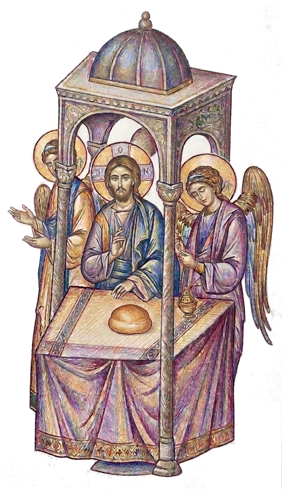

into the eucharistic life of Christ. And we do it in remembrance of
Him because, as we offer again and again our life and our world to
God, we discover each time that there is nothing else to be offered
but Christ Himself—the Life of the world, the fullness of all
that exists. It is His Eucharist, and He is the Eucharist. We are
included in the Eucharist of Christ and Christ is our Eucharist.
Therefore we can say that “the Liturgy is an ever-repeating
experience by the people of God of the love of God
and the reality of salvation” and that
“in it the mystery of the salvation of the world by
Christ is revealed and granted to us.”
… If one died for all, then all died; and He died for all,
that those who live should live no longer for themselves, but for
Him who died for them and rose again
into the eucharistic life of Christ. And we do it in remembrance of Him because, as we offer again and again our life and our world to God, we discover each time that there is nothing else to be offered but Christ Himself—the Life of the world, the fullness of all that exists. It is His Eucharist, and He is the Eucharist. We are included in the Eucharist of Christ and Christ is our Eucharist.
Therefore we can say that “the Liturgy is an ever-repeating experience by the people of God of the love of God and the reality of salvation” and that “in it the mystery of the salvation of the world by Christ is revealed and granted to us.”
